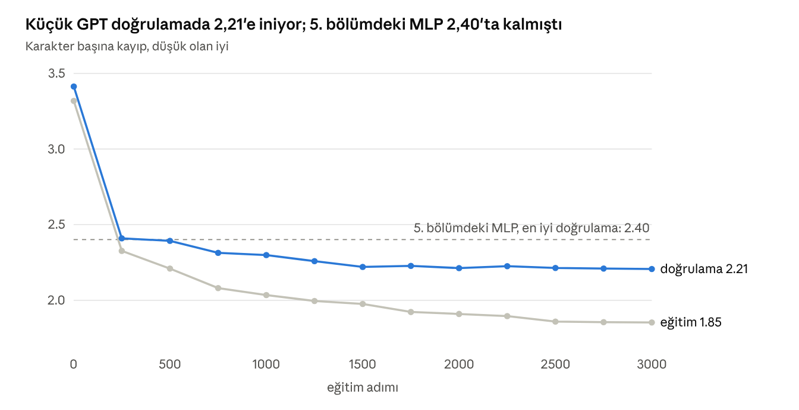

Kitaplar / Yöntem ile Sıfırdan Dil Modeli / Bölüm 9 / 14
Bölüm 8 — Küçük GPT’yi eğitmek
Artık tüm parçalar hazırdır. Bu bölümde küçük GPT’yi atasözleriyle eğitiyoruz. Program 5. bölümdeki eğitim döngüsüne dört yenilik ekliyor.
Akış ve pencereler. Eğitim atasözleri, aralarına nokta konularak tek uzun bir metne (akış) dönüştürülür. Her adımda bu metinden rastgele 8 pencere alınır; her pencere 16 karakterdir. Hedef, pencerenin bir karakter kaydırılmışıdır. Model bir pencerede 16 konumun hepsi için aynı anda tahmin yapar; maske sayesinde her konum yalnızca kendinden öncekileri görür. Böylece tek bir yığından 128 eğitim örneği çıkar.
Bırakma. 5. bölümde MLP’nin veriyi ezberlediğini görmüştük. Burada model.bırakma := 0.2 ile eğitim sırasında gömmelerin, dikkat ve ileri besleme çıktılarının %20’sini her adımda rastgele sıfırlıyoruz. Model tek bir yola güvenemediği için daha genel kurallar öğrenir. Değerlendirmede ve metin üretirken bırakma kapalıdır (model.eğitimde := yanlış).
Öğrenme oranı takvimi. Eğitimin başında büyük adımlar hızlı ilerletir; sona doğru küçük adımlar ince ayar yapar. Öğrenme oranını bir kosinüs eğrisiyle 0,003’ten sıfıra indiriyoruz. Büyük modellerin çoğu benzer bir takvimle eğitilir.
Erken durdurma. Her 250 adımda eğitim ve doğrulama kaybı ölçülür. Doğrulama kaybı o ana kadarki en iyi değerse ağırlıklar kucuk_gpt.agirlik dosyasına kaydedilir. Eğitim bitince en iyi ağırlıklar geri yüklenir. Model sonradan ezberlemeye başlasa bile elimizde en iyi hali kalır.
program KüçükGPTEğitimi
{ Kitabın asıl modeli: 2 katmanlı, 4 kafalı, 32 boyutlu, 16 karakterlik bağlama
bakan küçük bir GPT. Atasözlerinin %90'ıyla eğitilir, %10'uyla sınanır.
Eğitim verisi, atasözlerinin araya '.' konularak art arda dizildiği uzun bir
metindir. Her adımda bu metinden rastgele 8 pencere seçeriz; her pencerede model,
her konumda bir sonraki karakteri tahmin etmeye çalışır.
Eğitimden sonra ağırlıklar 'kucuk_gpt.agirlik' dosyasına kaydedilir;
9. bölümün programı bu dosyayı kullanır. }
kullan Atasozleri, DilAraclari, KucukGPT, YZ, Sistem, Matematik
sabit
BAĞLAM: tamsayı = 16
YIĞINBOYU: tamsayı = 8
ADIMSAYISI: tamsayı = 3000
ENYÜKSEKORAN: ondalık = 0.003
değişken
veri, harfler: metin dizisi
numara: sözlük
eğitim, doğrulama: tamsayı dizisi
model: GPT
opt: herhangi
kayıp: tensör
adım, i, k, ayrım: tamsayı
süre: ondalık
sözcük: metin
bağ: tamsayı dizisi
P: tensör
yığın: liste
enİyi, eğitimKaybı, doğrulamaKaybı: ondalık
işaret: metin
fonksiyon Pencereler(akış: tamsayı dizisi; adet: tamsayı): liste
{ Akıştan rastgele 'adet' pencere: [girdiler, hedefler]. Hedef, girdinin bir kaydırılmışı. }
değişken s, b: tamsayı; g, h: tamsayı dizisi
başla
g := []; h := []
1'den adet'e kadar her b için
başla
s := Rastgele(Uzunluk(akış) - BAĞLAM - 1)
g := g + Dilim(akış, s, s + BAĞLAM)
h := h + Dilim(akış, s + 1, s + BAĞLAM + 1)
bitir
dön [g, h]
bitir
fonksiyon OrtalamaKayıp(akış: tamsayı dizisi): ondalık
{ Akışın ilk 512 karakterini üst üste binmeyen pencerelerle tarar ve ortalama kaybı
verir. (Tüm akışı taramak daha doğru ama yavaştır; tahmin için bu kadarı yeter.) }
değişken s, adet: tamsayı; g, h: tamsayı dizisi; top: ondalık
başla
top := 0; adet := 0; s := 0
s + BAĞLAM + 1 <= Min(Uzunluk(akış), 512) iken
başla
g := Dilim(akış, s, s + BAĞLAM); h := Dilim(akış, s + 1, s + BAĞLAM + 1)
top := top + ÇaprazEntropi(model.İleri(g, 1, BAĞLAM), h).Değer
adet := adet + 1; s := s + BAĞLAM
bitir
dön top / adet
bitir
fonksiyon Akış(parçalar: metin dizisi; numara: sözlük): tamsayı dizisi
başla
dön DilAraclari.Kodla('.' + Birleştir(parçalar, '.') + '.', numara)
bitir
başla
Tohum(2026)
veri := Atasozleri.Hepsi
harfler := DilAraclari.Harfler
numara := DilAraclari.Numaralar(harfler)
ayrım := Uzunluk(veri) * 9 böl 10
eğitim := Akış(Dilim(veri, 0, ayrım), numara)
doğrulama := Akış(Dilim(veri, ayrım, Uzunluk(veri)), numara)
yaz(Biçimle('Eğitim akışı {} karakter, doğrulama akışı {} karakter', Uzunluk(eğitim), Uzunluk(doğrulama)), 1)
model := GPT.Oluştur(Uzunluk(harfler), BAĞLAM, 32, 4, 2)
model.bırakma := 0.2
yaz(Biçimle('Model: 2 katman, 4 kafa, 32 boyut, {} parametre', model.ParametreAdedi), 1)
opt := Adam(model.Parametreler, ENYÜKSEKORAN)
süre := Sistem.Zaman
enİyi := 1000.0
1'den ADIMSAYISI'na kadar her adım için
başla
yığın := Pencereler(eğitim, YIĞINBOYU)
{ öğrenme oranı takvimi: kosinüs eğrisiyle en yüksek orandan sıfıra doğru azalır }
opt.oran := ENYÜKSEKORAN * 0.5 * (1 + Cos(Matematik.pi * adım / ADIMSAYISI))
model.eğitimde := doğru
opt.SıfırlaGrad
kayıp := ÇaprazEntropi(model.İleri(yığın[0], YIĞINBOYU, BAĞLAM), yığın[1])
kayıp.GeriYay
opt.Adım
eğer adım = 1 veya adım mod 250 = 0 ise
başla
{ değerlendirirken bırakma kapalı olmalı }
model.eğitimde := yanlış
eğitimKaybı := OrtalamaKayıp(eğitim)
doğrulamaKaybı := OrtalamaKayıp(doğrulama)
işaret := ''
eğer doğrulamaKaybı < enİyi ise
başla
{ erken durdurma: en iyi doğrulama kaybındaki ağırlıkları sakla }
enİyi := doğrulamaKaybı; işaret := ' ← en iyi, kaydedildi'
model.Kaydet('kucuk_gpt.agirlik')
bitir
yaz(Biçimle('Adım {:4}: eğitim kaybı {:.3} doğrulama kaybı {:.3}{}', adım,
eğitimKaybı, doğrulamaKaybı, işaret), 1)
bitir
bitir
yaz(Biçimle('Eğitim süresi: {:.0} saniye', Sistem.Zaman - süre), 1)
model.Yükle('kucuk_gpt.agirlik')
model.eğitimde := yanlış
yaz('', 1); yaz('Küçük GPT modelinin ürettiği "atasözleri" (yeni olanlar * ile işaretli):', 1)
1'den 12'ye kadar her k için
başla
sözcük := ''; bağ := [0]
tekrarla
P := Softmaks(model.İleri(bağ, 1, Uzunluk(bağ)))
i := DilAraclari.Örnekle(P.Satır(Uzunluk(bağ) - 1).Veri)
eğer i <> 0 ise sözcük := sözcük + harfler[i]
bağ := bağ + [i]
eğer Uzunluk(bağ) > BAĞLAM ise bağ := Dilim(bağ, 1, Uzunluk(bağ))
i = 0 veya Uzunluk(sözcük) > 80 olana dek
eğer veri.İçerir(sözcük) ise yaz(' ' + sözcük, 1) değilse yaz(' * ' + sözcük, 1)
bitir
bitir.Programın çıktısı şöyledir (eğitim süresi bilgisayarınıza göre değişir):
Eğitim akışı 4725 karakter, doğrulama akışı 559 karakter
Model: 2 katman, 4 kafa, 32 boyut, 27678 parametre
Adım 1: eğitim kaybı 3.318 doğrulama kaybı 3.413 ← en iyi, kaydedildi
Adım 250: eğitim kaybı 2.327 doğrulama kaybı 2.410 ← en iyi, kaydedildi
Adım 500: eğitim kaybı 2.210 doğrulama kaybı 2.393 ← en iyi, kaydedildi
Adım 750: eğitim kaybı 2.081 doğrulama kaybı 2.314 ← en iyi, kaydedildi
Adım 1000: eğitim kaybı 2.035 doğrulama kaybı 2.299 ← en iyi, kaydedildi
Adım 1250: eğitim kaybı 1.996 doğrulama kaybı 2.259 ← en iyi, kaydedildi
Adım 1500: eğitim kaybı 1.976 doğrulama kaybı 2.221 ← en iyi, kaydedildi
Adım 1750: eğitim kaybı 1.923 doğrulama kaybı 2.228
Adım 2000: eğitim kaybı 1.910 doğrulama kaybı 2.213 ← en iyi, kaydedildi
Adım 2250: eğitim kaybı 1.896 doğrulama kaybı 2.226
Adım 2500: eğitim kaybı 1.860 doğrulama kaybı 2.214
Adım 2750: eğitim kaybı 1.856 doğrulama kaybı 2.210 ← en iyi, kaydedildi
Adım 3000: eğitim kaybı 1.854 doğrulama kaybı 2.207 ← en iyi, kaydedildi
Eğitim süresi: 576 saniye
Küçük GPT modelinin ürettiği "atasözleri" (yeni olanlar * ile işaretli):
* kükünsen günül seyi yacar
* dağıp daşmun dirindene billen tıktır
* ayıcız her oğrolar sönürünü zeçen beli dör kerdimi domnuna yesin yünü eve karder
* ağen yalak vırık
* gelilecece ayığı öy verit kişerin anlt biş gele olstmaz
* harakttılda hirlin teden herdeğri firini göle konuşmazsun çoran balanır yır biğil
* işi söden idemin bil binden sötüğrüne tavardar
* surt yeyokt a çtalut
* götürdür
* ağla ayırı kersen mur
* yoğşta yolur kidi güş kakmana sende yosut dit keçtind kadır
* sere terendi yok çundi bülür ker içinde hapatamapaÇıktıyı okumak

Doğrulama kaybı eğitim boyunca düşmeye devam ediyor ve 2,207’de bitiyor. Bu, 5. bölümdeki MLP’nin en iyi değerinden (2,40) belirgin biçimde iyi. Eğitim ve doğrulama kayıpları arasındaki fark da daha küçük: 1,85’e karşı 2,21. MLP’de bu fark 1,26’ya karşı 2,88’e kadar açılmıştı. Bırakma ve daha uzun bağlam birlikte işe yarıyor.
Üretilen metne bakalım. On iki örneğin hepsi yeni (yıldızlı): model hiçbir atasözünü birebir kopyalamıyor. “göle”, “götürdür”, “içinde”, “konuşmaz” gibi gerçek sözcükler ve “-ar”, “-maz”, “-dır” gibi Türkçe ekler doğru yerlerde görünüyor. Ama cümleler henüz anlamlı değildir.
Bu, dürüst bir sonuçtur ve dil modelleri hakkında önemli bir şey öğretir. Modelimizin gördüğü tüm metin 4725 karakterdir, yani bu sayfanın birkaç paragrafı kadardır. Bir çocuk bile konuşmayı öğrenirken milyonlarca sözcük duyar. Mimari doğru, eğitim düzgün işliyor; eksik olan veri ve ölçektir. 10. bölümde bu farkı sayılarla göreceğiz. 9. bölümde ise aynı modelden metni nasıl seçtiğimizin sonucu ne kadar değiştirdiğini inceleyeceğiz.
Değerlendirme hakkında bir not: program kaybı hız için akışların yalnızca ilk 512 karakteri üzerinde ölçüyor. Bu, eğilimi görmek için yeterlidir ama kesin bir ölçüm değildir.
Alıştırma. model.bırakma := 0.2 satırını silip programı yeniden çalıştırınız. Doğrulama kaybı hangi adımda en düşük değerine ulaşıyor ve ondan sonra ne oluyor? Ardından Atasozleri.y dosyasına kendi bildiğiniz atasözlerini ekleyiniz; veri büyüdükçe doğrulama kaybı nasıl değişiyor?